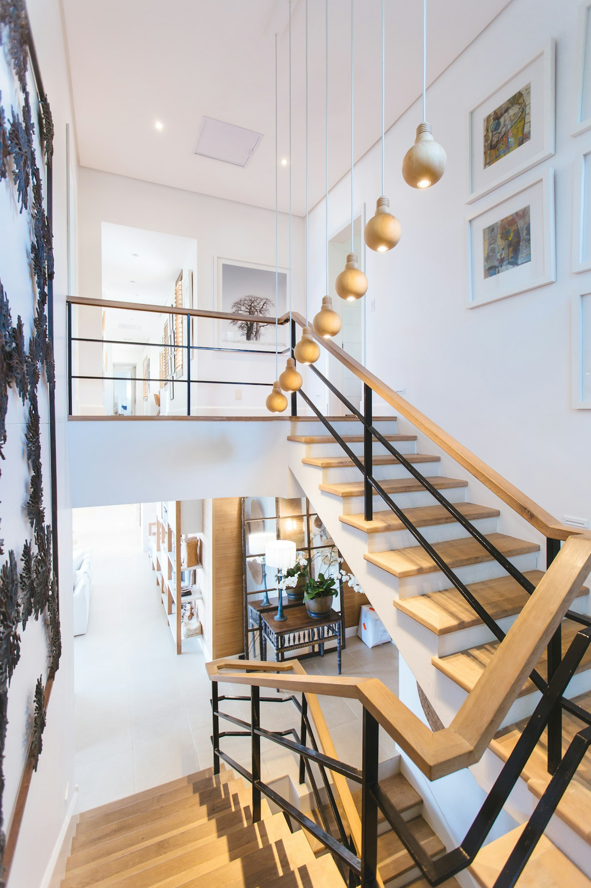
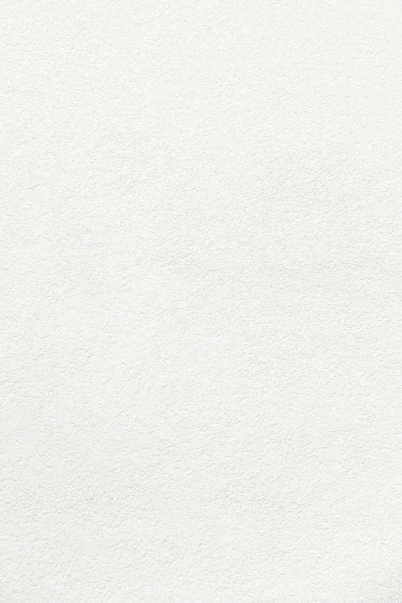

The Stone House
Quarried
light
Marble and natural stone — drawn from the earth, cut with patience, finished to last centuries.

A material with memory
Each vein is
a million years
No two slabs are alike. We hand-select blocks at the quarry and book-match the cuts, so the stone in your home carries a pattern that exists nowhere else on earth.
Floors, surfaces, basins and sculpture — fabricated to the millimetre by our stoneworkers.
The palette
Our stones
Six signature marbles, each with its own temperament — from luminous white to deep, dramatic black.
Calacatta Oro
White · Gold veinCarrara
White · Soft greyStatuario
Bright · CharcoalNero Oro
Black · Gold veinEmperador
Brown · CreamVerde Alpi
Green · WhiteFrom block to surface
Cut, honed,
polished, placed
We follow each slab from the quarry face to your floor — sawn to size, the edges profiled, the surface honed matte or mirror-polished to your finish.
Polished
01A high-gloss mirror that deepens the colour and vein.
Honed
02A soft matte surface, contemporary and tactile.
Brushed
03Lightly textured — warm underfoot, naturally anti-slip.

“I saw the angel in the marble and carved until I set him free.”— Michelangelo